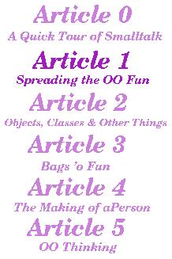
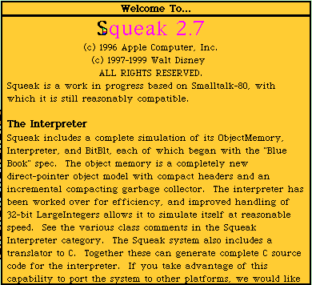
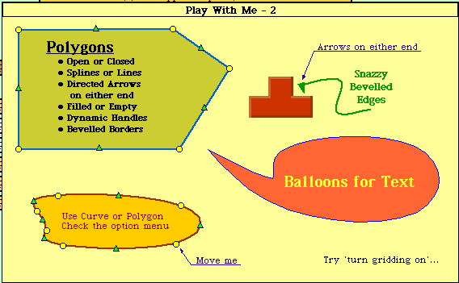
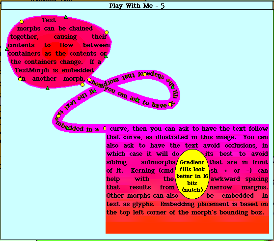
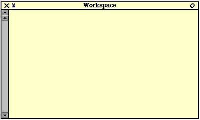
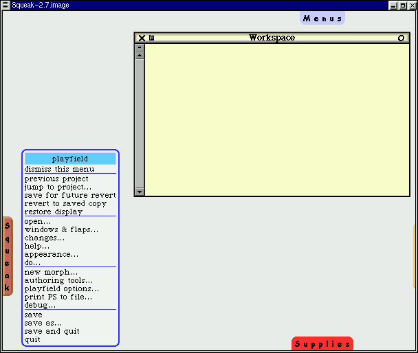
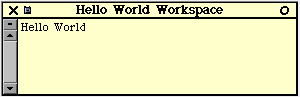
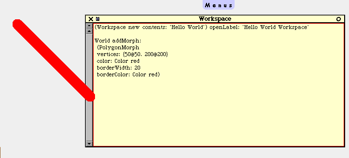

![[ Prev ]](../gx/navbar/prev.jpg)
![[ Table of Contents ]](../gx/navbar/toc.jpg)
![[ Front Page ]](../gx/navbar/frontpage.jpg)
![[ Talkback ]](../gx/navbar/talkback.jpg)
![[ FAQ ]](./../gx/navbar/faq.jpg)
![[ Next ]](../gx/navbar/next.jpg)

"Linux Gazette...making Linux just a little more fun!"
Abstract

When I wrote the first Making Smalltalk with the
Penguin article
back in March of 2000 [LL],
my target audience was experienced programmers who didn't have much exposure
to OO programming or to Smalltalk.
The article's intent was to give an overview of my favourite programming
language on my favourite operating system. Since then, I've had a
fair amount of email asking introductory type questions about Smalltalk
and OO programming. So I thought I'd try my hand at a small series.
It's been a while coming as after the first article I relocated from KS->CT
and had a baby (obviously using the corporate 'I' here! :-)
The target audience for this series are people new
to OO or new to programming altogether. The intent is to not only
introduce OO programming, but to also spread the fun of Smalltalking.
Why do this format/effort when there's lots of good tutorials
out there? Two reasons really: 1) Tutorials are great,
but can be static and dated pretty quickly. 2) An ongoing series
tends to be more engaging and digestible.
To help address the second reason above, my intent
is to keep the articles concise so they can be digested in under an hour1.
Hopefully, as newbies follow along, they can refer back to the original
article and make more sense of it. I plan on having a touch of advanced
stuff once in a while to add flavour and as before, the articles are going
to be written for read-along or code-along people.
Something new I'm going to try is to make the ongoing
series viewable in a contiguous fashion and downloadable in one chunk for
people who want to browse the series locally. To do this, click on
TOC grapic to right. The articles are going to have 2 sets of links:
one set for www links, another set for local links, indicated as: [LL]
If you like what you're reading, drop
me a line letting me know, and I'll keep putting precious time into
it.
Why Smalltalk?
Before we can get into OO stuff, I feel the need to
set the context of the articles. Unfortunately, this will take up
the bulk of this first article, but it's an important thing to do.
We'll finish with a little bit of OO stuff at the end, and get into it
more in the next article.
I believe Smalltalk is the best environment
to learn OO programming in because:
-
Smalltalk has a very active and very helpful community; when you post a
question to the Smalltalk newsgroups you very often get an answer, unlike
many other newsgroups
-
is very easy to learn... one of it's original design intententions was
to be a learning environment for children
-
is a pure OO environment and encourages OO programming (as opposed to encouraging
procedural/Object mixed programming)
-
cutting your teeth in Smalltalk makes you a better OO programmer in any
other language, because of the previous bullet
-
is a portable environment: write once, run anywhere, so people can
learn on whatever OS they're running (as opposed to just the M$ variety)
-
can look at and manipulate objects in real time; I haven't seen this ability
in any other environment
-
Smalltalk is written in Smalltalk. You can view how the language
is put together to learn the language, and you can change anything that
you don't like about it.
-
has garbage collection, no manual memory management, no explicit pointers
-
is a literate language; by this I mean the syntax is very simple and is
geared towards programmer readability.
-
there's lots of Cool Things that you can do in it that I haven't seen anywhere
else (will have some examples along the way)
-
...and best of all: it's fun.
In particular, I'm going to use Squeak
as the playing vehicle. You'll notice this is a different flavour
of Smalltalk than I used in my first article. I've never used Squeak
before, so this'll be a learning experience for me too. The reasons
for this are:
-
It's a completely opensource project
-
It has some Really Cool features that I haven't seen in other flavours
of Smalltalk
-
It has a comparitively small footprint and it's very easy to install
-
It has a strong Swiki site
(a Wiki site hosted in Squeak, hence Squeak
Wiki)
Quote of the day
In essence, Smalltalk is a programming language focused on human beings
rather than the computer.
-Alan Knight
Installation stuff
Note: before you fire
up Squeak, I need to warn you to not be put off by the sparten GUI. There's
actually two types of GUIs in Squeak: MVC & Morphic, both of
which have skins to implement specific look-n-feels. For at least
the beginning of the series, I plan on sticking to Morphic without skins,
as it's the newer GUI and I want to keep things simple.
To install Squeak, you basically need to download
and unzip 4 files. RPMs are available for people who prefer them.
For instructions on downloading and installing Squeak, see these installation
instructions, or these installation
instructions. (Note: I'm using v2.7 of Squeak, which isn't
the latest version, but for the purposes of these articles, the latest-n-greatest
version is not required unless otherwise noted)
First Looks
Note: do not save anything until we get to
that point below. The initial orientation and setup of squeak is
a little painful, but by the time we're done here it'll be much more friendly.
Now that you have Squeak installed, let's fire it
up. Go to a command prompt, cd to the directory where squeak is,
and type squeak Squeak-2.7.image. You'll see a window open,
with 10 windows within it. Feel free to read the Welcome To...
and Getting Started... windows. If you want to skip this and
read them later, that's fine too. You'll notice that the look-n-feel
is "weird", don't worry about this. There are reasons for this that
I'll get to in a future article. You can also play around with the
various Play With Mes (there's some neat things there). Feel
free to mess around to your heart's content, try resizing things, moving
them ,etc. Don't worry about breaking anything as we haven't saved
anything yet. When you click on Play With Me 3, 6, 7 or 8,
you need to click on the window to get into it. To get out of it,
left
click on the window background, and select previous project.
When you're done playing, and you're back in the
main view you started out in, middle click on the squeak background
somewhere, and select quit, and no, as we don't want to save
any changes. Now restart squeak, and move the Welcome To...
window somewhere. Now middle click on the squeak background
somwhere, and select save and quit. Now, restart sqeuak again...
notice that the window is in the place where you left it. In fact,
every time you save in sqeuak the state of the IDE is saved exactly
as it was! 2 All the window
placements, all the code - everything is exactly where you left it.
This is great for getting back up to speed quickly on what you were doing.
For the read-along folks, here's what the Welcome
To... & two of the Play With Me windows look like:



Now, let's do a little customization before we move
on to examples. Open a workspace (middle click on the squeak
background, select open...>workspace.) You'll notice that
it's the same type of window as the Welcome To... and Getting
Started... windows. Enter in the following code snippits:
Preferences setPreference: #noviceMode toValue:
true.
Preferences setPreference: #inboardScrollbars
toValue: true.
Preferences setPreference: #useGlobalFlaps toValue:
true.
Then highlight both lines and execute the
code (middle click>do it). This is known as 'doing it' in
Smalltalk. Congratulations, you just ran your first Smalltalk code.
Don't worry about the symantics right now, just be aware that we set some
preferences. Now, remember when I mentioned that we'd be using the
morphic GUI type for these articles? To do this, middle click
on the squeak background, select open...>morphic
project. You'll see a small window appear called Unnamed1.
Let's name this project something, as you've already probably experienced,
clicking on the title of the window will bring up a rename prompt.
Type in Making Smalltalk. If you want, you can resize the window
to see the whole title.
Now, let's enter the project, do this by clicking
on the project to give it focus, then clicking on it again. You'll
notice there are four tabs arranged around the screen (Menus,
Squeak, Tools, and Supplies). If you mouse over the tab, a pop
up menu will appear with neat stuff on it. If you mouse over the
Menu
tab you'll see the open... menu in the top left corner, select workspace
to open up a workspace. You'll notice the look-n-feel is a little
different now, as we're using the Morphic type of GUI; this project will
be the basis of these articles.

One thing you'll notice from the menus, is that there's no saving option.
Since we want to save everything we've done, let's get that menu.
To do this, right click on the project background, you should see
a series of different coloured dots around the screen. We're not
going to get into their purpose just yet. Now left click on
the red dot in the top left hand corner of the screen, you'll see
a playfield menu, select keep this menu up. Now the menu is
sticky, and you can move it around. Let's move it out of the way
of the flaps to the bottow left hand corner of the screen. Finally,
let's save what we've done, on that menu you just made sticky, click on
save.
Your window should look something like:

Getting to objects
As I mentioned, the bulk of this article is going to
be setting the stage for future articles. Now we can finally start
addressing the topic at hand. There are many different definitions
of what an object is. One way of thinking about it is that an object
is anything you can think of that is a noun. A window, a menu, an
array, a GUI, a string, an integer, a person, a tree, etc. This is
a very simple view of what an object is, and we'll refine the definition
over time.
In Smalltalk, everything is an object3.
Unlike other languages where small building blocks like integers or strings
aren't objects, everything is an object. If you have procedural programming
experience, this is a good mantra to repeat for about 6 months.
Let's start with the venerable Hello World example,
but with a minor update (sheesh, we're not back in the '60s here).
Instead of printing a string to the stdout (to the command line), let's
open a window with the string in it. In the workspace enter and 'do':
(Workspace new contents: 'Hello World') openLabel:
'Hello World Workspace'
You'll see:

Remember when I said everything is an object?
Well, we asked a new Workspace object to make its contents Hello World,
then
asked it to open itself with the label 'Hello World Workspace'.
Notice there's no 'main' method, no compiling and linking step, no switching
between a text editor and a compiler. The simplicity of being able
to just type Smalltalk code and run it is very refreshing.
...but this old example is pretty worn out.
Let's do something a little more up to date4.
Let's make a line; in the workspace enter and do:
World addMorph:
(PolygonMorph
vertices: {50@50.
200@200}
color: Color red
borderWidth: 20
borderColor: Color
red)
You'll see:

Here, we asked the project (World) we're in (projects
are objects too) to add a morph that is a red line from point 50x50 to
point 200x200. Now, let's play with this object a little bit, if
you right click on the line object, you'll get the various multi-coloured
points again (these are called halos). If you mouse over the line
object, you'll see pop-up help describing what the halos do (Rote, Change
size, debug, Duplicate, Move, etc). Left click on the
yellow halo, and resize the line a few times. Try the rotate,
duplicate, move buttons to play some more. Finally left click
on the 'X' button when you want to get rid of the line object(s).
To make this first article digestible, I'm going
to stop off here. Before I go though, I'm going to introduce the
'Sweet Squeak' section...
A Sweet Squeak
This section won't explore/explain code or example, but merely present
a neat thing to try out5. This
time, lets view a shockwave file. If you have an internet connection
up, try entering this code and do it: (note, might take a while
over 28.8; I did this at a friend's place with a 128K ISDN and it was pretty
snappy)
(FlashMorphReader on: (HTTPSocket
httpGet: 'http://www.audi.co.uk/flash/intro1.swf'
accept:'application/x-shockwave-flash'))
processFile startPlaying openInWorld.
Looking forward
The next article will discuss Objects again as well as classes, messages
and encapsulation.
Also, if any Squeakers out there know of something neat that can be
easily done, let me know and I'll add it if there's room.
Questions and Answers
As opposed to including already answered questions via email, I'm going
to start this section with a clean slate to address questions (as I have
time) that this series raises. If you want a faster response, try
posting your question to the comp.lang.smalltalk newsgroup, or the Swiki.
Article Glossary
This is a glossary of terms that I've used for the first time in this series,
or a term that I want to refine. If you don't see a term defined
here, try the ongoing
glossary [LL]
IDE
Integrated Development Environment.
An environment that programmers use to develop code in that they can program
and debug in.
[LL]
relative Local Link, use
this link when browsing these articles locally
Object
(def 1-simple)
An object is anything you can think of that is a noun. A window,
a menu, an array, a GUI, a string, an integer, a person, a tree, etc.
OO
Object Oriented Briefly,
this is a popular style/methodology of programming that these articles
are going to introduce.
Project
A specific view of the
code. You can have multiple simultaneous views of the code.
This is very handy if you're doing two or three projects at once, and don't
want to lose track of where you're are in them.
Wiki site
A series of web sites where
there is no designated editor (for the most part, the odd page may have
a password). If you see a way to improve the site, you can do so yourself!
If you don't understand something, just edit the web page and type in your
question!
Footnotes
[1] Keeping the articles concise will actually be the biggest challange.
There's such a wealth of information that it's hard to convey just what
is needed. To that end, I plan on making some simplifications
as I go along and gradually refine them to reflect the technicalities.
[2] This is a feature common to all Smalltalk flavours that I
know of. It's one of the many thinks I like about Smalltalk.
[3] This is the same assertion that I made in the first article,
and I had a pile of people email me about how this isn't technically accurate.
I thought from the context of the article that it would be apparent that
this was a simplified generalization, oh well. This time I'll be
explicit: this assertion is technically not accurate: not everything
in Smalltalk is an object, but the vast majority of things are. For
the beginner, it's a helpful simplifying view to have. I plan on
refining this view later on.
[4] This snippet is from a Swiki
entry by Dan Ingalls
[5] This snippet is also from the Swiki
Copyright © 2000, Jason Steffler.
Copying license http://www.linuxgazette.net/copying.html
Published in Issue 59 of Linux Gazette, November 2000